Left = the current running app (real device screenshots). Right = the new feature-complete proposed UX — rebuilt so it keeps the navy + gold look and preserves every real feature (revived what the first mockups dropped; removed what they invented).
The new UX adds state/dialog/sub-screen frames (search results & empty, the real ayah floating toolbar, multi-select CAB + tag dialog, per-reciter surahs + bulk-download, the full data-download flow, audio states). See them all live in index.html (toggle EN/AR + light/dark).
◀ Current appNew feature-complete UX ▶
Index & navigation
01 Quran Index — Surahs
Feature-complete redesign
Current app
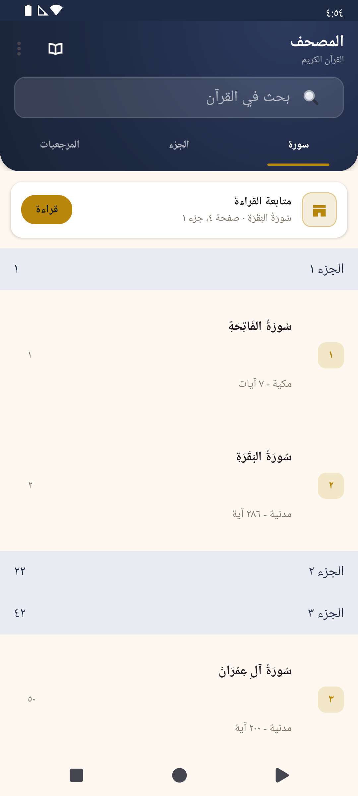
→
New UX
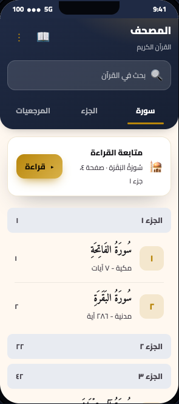
✓ Revived in the new UX
Interleaved Juz section headers in the Surahs list. The real Surahs tab shows 'Juz' N / الجزء N' band headers (with the juz start page on the end) between the surahs of each juz; the mockup renders a flat surah list with no juz headers at all.
The 'Last page' toolbar book icon (ic_goto_quran) that jumps to the last read page.
Real overflow-menu contents: 'Go to page', 'Settings', 'Help', 'About Us' (the mockup shows a bare ⋮ with no defined items).
The entire inline search-results experience: the navy 'N results for "query"' count band, verse-hit result rows (highlighted matched text + 'Found in Surah X: ayah (page P)'), the 'No results / Try a different word, or download a translation to search its text.' empty state, and the 'Keep typing to search the Quran…' state.
The fact that search opens a highlighted ayah in the reader (and jumps to translation for non-Arabic queries) — no result-tap behavior is represented.
✕ Removed (mockup had invented these)
A back chevron '‹' in the nav bar. The index/home toolbar has no up/back arrow (no setDisplayHomeAsUpEnabled); the start hosts only the title+subtitle.
A per-row '★' star/bookmark control on row #2 (Al-Baqarah). The Surahs tab has no per-row bookmark/star affordance (isEditable=false, no touch/long-press listener, no tags shown).
A trailing '›' chevron on surah rows. Real rows have no chevron — the trailing view is the page number.
Searching by 'surah / juz / page' as implied by the placeholder — this capability does not exist.
02 Index — Juz' list
Feature-complete redesign
Current app
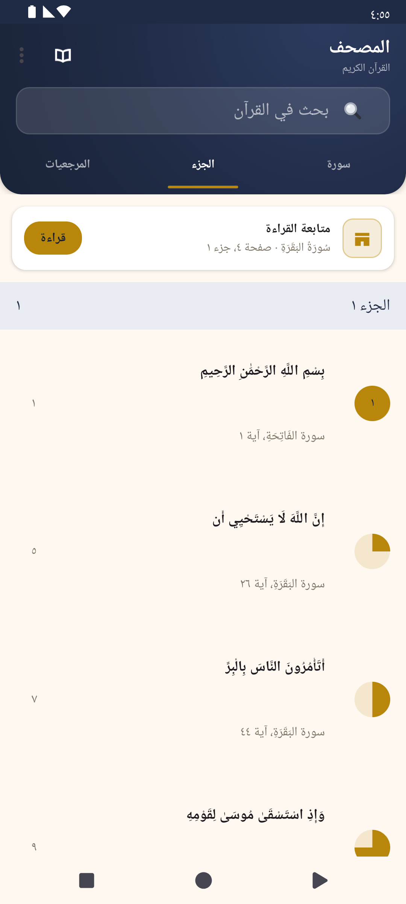
→
New UX
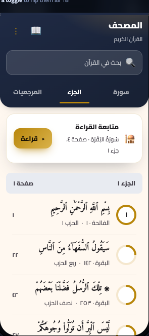
✓ Revived in the new UX
The entire rub'-al-hizb quarter structure: the 8 quarter rows per juz (240 rows). The mockup reduces the whole tab to 30 flat 'juz' rows.
The JuzView circular pie icon and its four quarter-fill states (full / ¼ / ½ / ¾) that mark hizb-start, ربع, نصف, ثلاثة أرباع.
The hizb-number overlay (1..60) drawn on each full circle (the '١' seen in the screenshot).
The Arabic ayah-START phrase as the row's main line (e.g. 'بِسْمِ اللَّهِ الرَّحْمَٰنِ الرَّحِيمِ', 'إِنَّ اللَّهَ لَا يَسْتَحْيِي أَن').
The per-quarter 'سورة X، آية Y' metadata line.
The 'Continue reading'/'متابعة القراءة' card: gold-framed mushaf icon, subtitle '<sura> · صفحة N، جزء N', and the gold 'قراءة'/'Read' chip.
✕ Removed (mockup had invented these)
'Juz' 1–10'/'الأجزاء ١-١٠' range grouping — the app groups strictly by single juz ('الجزء ١', 'الجزء ٢', …), never by 1–10 ranges.
Per-row chevron '›' disclosure arrow — index_sura_row contains no chevron/arrow view; rows are flat.
Ordinal juz names 'الجزء الأول / الثاني / الثالث' as row titles — the real list never uses ordinal names; the digit form 'الجزء ١' appears only in the header band, and rows show ayah text.
Sequential num badge (1,2,3…) counting juz on each row — juz rows hide the number badge (replaced by the pie icon); the only number on a row is the page number.
A back chevron '‹' in the toolbar — QuranActivity is the top-level home index and never enables an Up/back button (no setDisplayHomeAsUpEnabled); the screenshot top-left is the menu icons, not a back arrow.
03 Index — Bookmarks tab
Feature-complete redesign
Current app
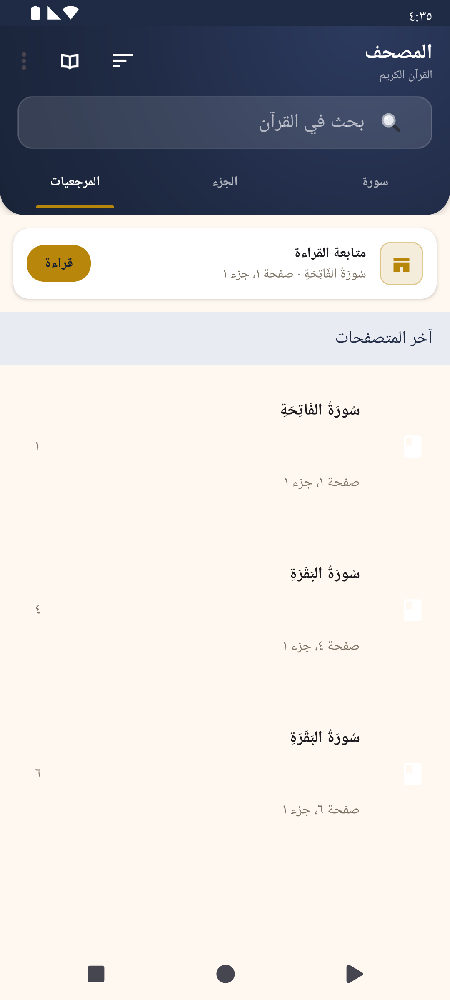
→
New UX
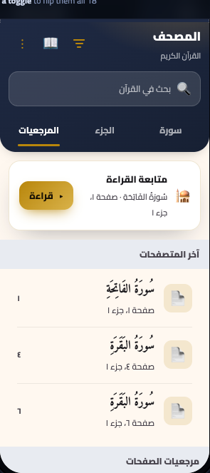
✓ Revived in the new UX
Continue-reading card entirely missing — no 'Continue reading'/'متابعة القراءة' title, no gold 'Read'/'قراءة' button, no sura/page subtitle, no gold icon frame. This is one of the two dominant elements in the as-built screenshot.
Recent-pages section entirely missing — no 'Recent pages'/'آخر المتصفحات' header and no recently-read page rows (current-page glyph + sura name + 'Page X, Juz Y' + trailing page number). This is the main list content actually shown on the device.
Sort overflow submenu missing — no Date-Added vs Location-in-Quran radio, no Group-by-Tags toggle, no Recent-pages (show recents) toggle, no Show-Date toggle.
Default ungrouped layout missing — no 'Page Bookmarks'/'مرجعيات الصفحات' and no 'Ayah Bookmarks'/'مرجعيات الآيات' section headers (the mockup only depicts the grouped-by-tags view).
'Not Tagged'/'غير مصنف' header (untagged group in grouped-by-tags mode) missing.
Long-press contextual multi-select action mode missing — no Tag Bookmark / Edit Tag / Delete Tag / New Tag CAB and no 'Deleted N items' + 'Undo' snackbar.
✕ Removed (mockup had invented these)
Tag-group headers 'Memorizing'/'الحفظ' and 'Favorites'/'المفضلة' presented as the default/only view — real default is NOT grouped by tags; grouping is an optional toggle and tag names are user-created (these specific names are invented).
Per-row chevron '›' — real bookmark/recent rows have no chevron.
Relative date strings '2 days ago'/'قبل يومين', 'last week', 'last Friday' — real date display is an absolute 'MMM dd, HH:mm' timestamp and only appears when the 'Show Date' toggle is on.
Back chevron '‹' in the hero — the real toolbar has no navigation/back button (contentInsetStart=0, no nav icon).
A '🔍' search icon among the toolbar actions — real layout has no separate search toolbar icon; search is the always-visible inline field.
Reader & ayah panels
04 Reader — page image mode
Feature-complete redesign
Current app
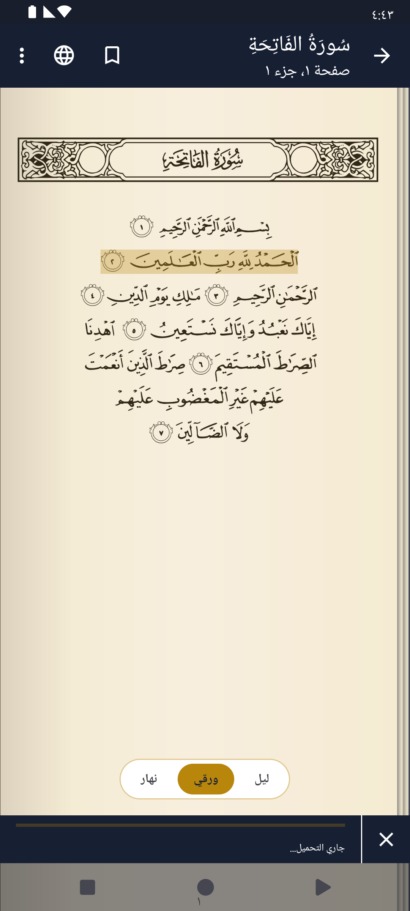
→
New UX
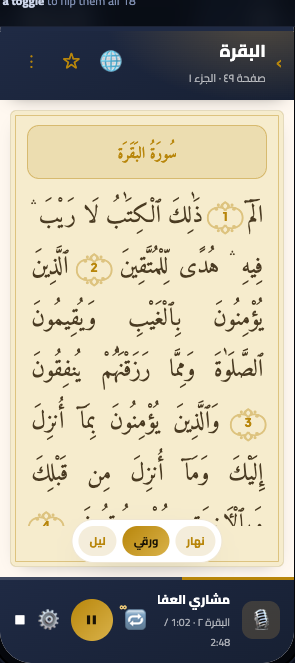
✓ Revived in the new UX
The Show Translation / Show Quran toggle (globe, ic_translation) — and the entire translation text view, which is the reader's second view mode.
The Search action and its collapsible SearchView.
The overflow (⋮) menu contents: Jump/Go-to-page (انتقال سريع), Focus mode (وضع التركيز), Settings (الإعدادات), Help (مساعدة) — and Show Quran (إلى التلاوة) when in translation mode.
The translation-mode Sura/Juz jump spinner that replaces the title.
The ayah long-press contextual toolbar entirely: Bookmark ayah, Tag ayah, Share (link/text/Copy), Translation, Play from here, Recite from here.
Audio bar: the Qari/reciter selection spinner (stopped mode), the Stop button, the Repeat button + repeat-count cycling (1/2/3/∞), the Audio-settings gear, the Cancel (X), and the entire DOWNLOADING/LOADING state (which is what the as-built screenshot shows), the download-over-mobile-data prompt state, and the recitation (mic/transcript/hide-page/end-session) mode.
✕ Removed (mockup had invented these)
A reciter name text label in the audio bar ('Mishary Alafasy' / 'مشاري العفاسي') — the real bar has no name label; the reciter is chosen via a dropdown spinner.
An elapsed/total time readout ('1:02 / 2:48') — no such time text exists in AudioStatusBar.
An audio progress/waveform scrubber bar (aprog) in the playing state — the real progress bar appears only in the DOWNLOADING/LOADING state, not as a playback scrubber.
A mic-avatar 'now playing' thumbnail (🎙️) in the audio bar — not present in the real control strip.
08 Reader — text mode
Feature-complete redesign
Current app
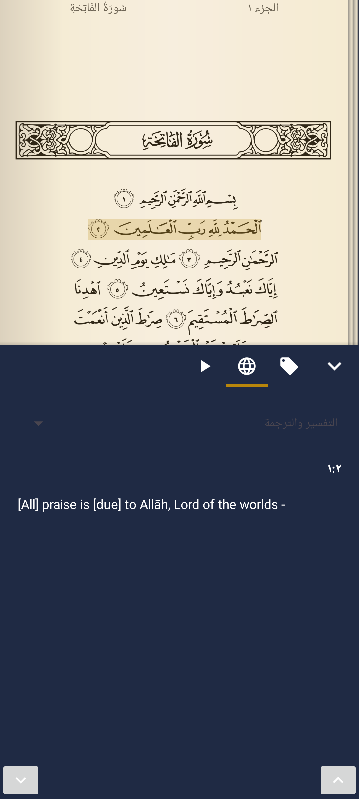
→
New UX
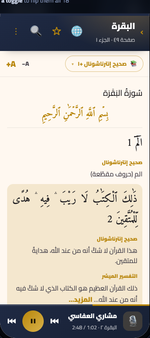
✓ Revived in the new UX
Sura-header band row (centered sura name on a cream/navy band) — mockup jumps straight to ayahs with no sura header.
Basmallah row before ayah 1 of a sura (mockup's first row is Al-Baqarah ayah 1 'الٓمٓ' with no basmallah line shown).
'Back to page' (goto_quran) toggle and any indication that this content also has an Arabic PAGE-IMAGE mode (the app has BOTH image and text modes for the same page).
Multi-select translation chooser (the spinner dropdown with checkmarks for multiple downloaded translations/tafaseer) — mockup shows a single fixed 'Saheeh International'.
Multiple simultaneous translations, each with its own bold ALL-CAPS gold TRANSLATOR header.
Long-tafseer 'المزيد…' truncate/expand link.
✕ Removed (mockup had invented these)
The standalone centered 'Saheeh International' outlined chip below the header — no such single-translation chip exists in the real text mode.
Implicitly framing the screen as text-only with no awareness that the same page also has an Arabic page-image mode AND a separate slide-up ayah translation panel (the surface the screenshot actually shows).
(Verification, not an invention to keep) menu_view_mode.xml's List/Grid/Compact toggle belongs to the reciter/audio surah lists (RecitesName/AyaList), NOT this screen; the mockup correctly omits it — do NOT add a view-mode switcher here.
05 Ayah panel — translation
Feature-complete redesign
Current app
→
New UX
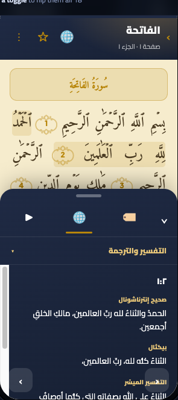
✓ Revived in the new UX
The 3-tab SWIPEABLE indicator. The mockup reduces it to three decorative plain dots (one 'on') — it drops the Tag/Bookmark tab, the Audio/Playback tab, the gold active-underline, and the fact that the user can swipe between Bookmark · Translation · Audio panels.
Multi-select of translations: the ability to enable several translations/tafaseer at once and see them STACKED, each under its bold translator-name header.
The 'More Translations' / 'المزيد من الترجمات والتفاسير' dropdown entry that opens the Translation Manager.
The empty state: @string/need_translation message + 'Get Translations' button (when nothing is downloaded).
The loading ProgressBar state.
Selectable translation text (long-press select/copy).
✕ Removed (mockup had invented these)
The centered Arabic ayah line inside the panel ('ذَٰلِكَ ٱلْكِتَٰبُ لَا رَيْبَ ۛ فِيهِ ۛ هُدًى لِّلْمُتَّقِينَ', line 45). This sliding translation panel never shows Arabic — InlineTranslationPresenter requests getVerses(false) and InlineTranslationView only renders the translation text. (Arabic-above-translation exists only in the separate full-page Translation reading mode.)
A separate 'Translation' / 'الترجمة' field LABEL above the spinner. There is no such label in the app — the spinner's static text IS the only label.
Treating the panel as a single-translation viewer (one translation, one Arabic line, prev/next) — the real screen is one of three swipeable action panels with multi-translation stacking.
06 Ayah panel — playback
Feature-complete redesign
Current app
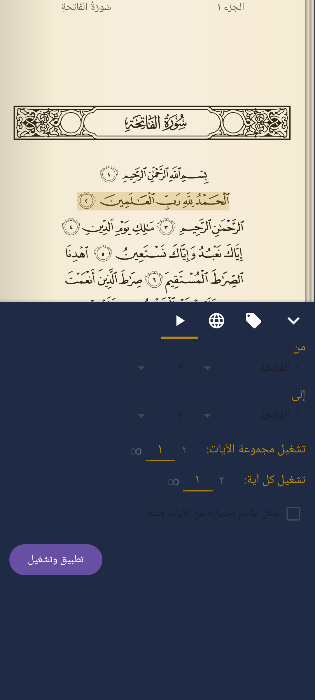
→
New UX
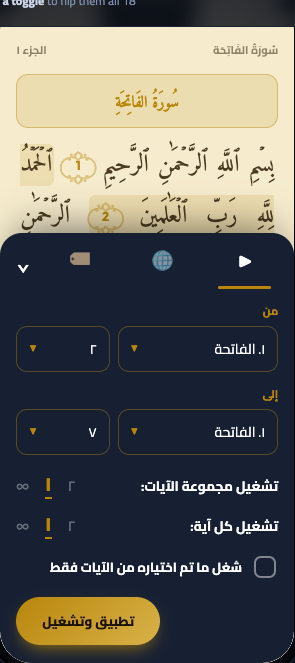
✓ Revived in the new UX
The icon TAB STRIP (Play / Translation / Tag) that switches between the three ayah-action panels — replaced by three meaningless carousel dots, losing both the labeled destinations and the gold-underline active indicator on the Play tab.
The chevron-down (⌄) COLLAPSE control — the real way to dismiss the panel.
The ∞ (infinity / repeat-indefinitely) option for both repeat counts — the stepper chips show only finite '2×'/'1×' with no ∞ affordance.
The full 1..25 range of the repeat counts — the wheel-picker capability to scroll up to 25 is reduced to a tiny stepper.
The dynamic 'Apply and Play' (تطبيق وتشغيل) button label state — mockup only ever shows 'Apply'.
Dropdown/spinner affordance on the From/To selectors — they are real spinners (114-sura name list + dynamic ayah-number list), shown in the mockup as plain text boxes with no ▼.
✕ Removed (mockup had invented these)
A 'Playback range' / 'نطاق التشغيل' sheet TITLE — no such title exists in the real panel.
A ✕ close button in the sheet header — real uses the chevron-down to collapse, there is no ✕.
A drag grab-handle bar at the top of the sheet — the real panel has none.
Three carousel pager DOTS — the real navigation is an icon tab strip.
A dark SCRIM dimming the reader page behind the sheet — the as-built keeps the sepia reader page fully visible/un-dimmed.
07 Ayah action toolbar
Feature-complete redesign
Current app
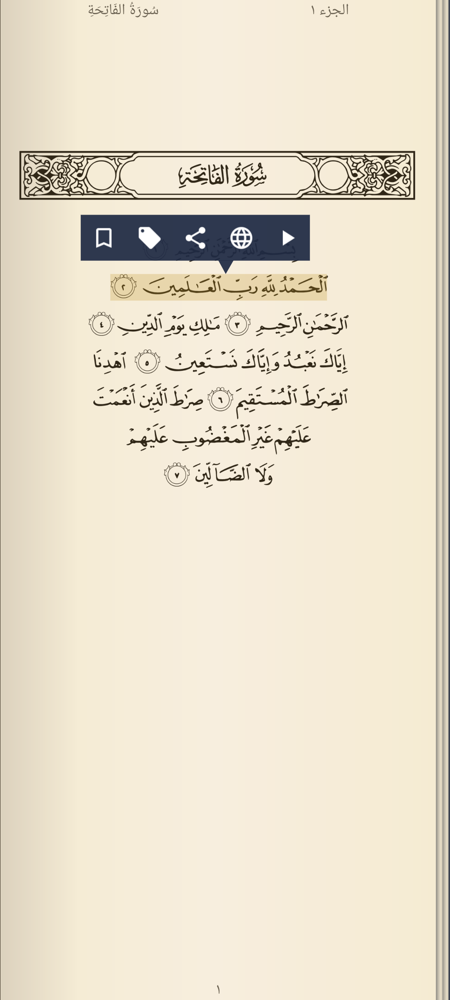
→
New UX
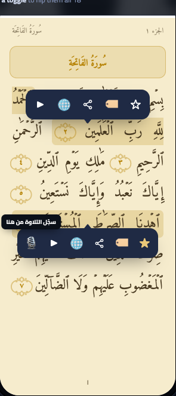
✓ Revived in the new UX
The entire FLOATING AYAH ACTION TOOLBAR — the navy 5-icon popup bar with its directional pip that is the actual subject of the as-built screenshot — is completely absent. The mockup jumps straight to a Tags bottom-sheet.
BOOKMARK action and its toggle state (outline ic_not_favorite ↔ filled ic_favorite) — not represented anywhere.
SHARE action and its inline submenu (Share Ayah Link / Share Ayah Text / Copy Ayah) — dropped entirely.
TRANSLATE / Tafsir (globe) action — dropped from the toolbar (the mockup's panel only covers Tags, not the Translation page it would open).
Per-tag color swatches / colored categories — the app's Tag model is only (id, name); tags have no color attribute.
'Cancel' and 'Save' buttons inside the in-reader Tags panel — the in-reader (non-dialog) Tags page has no buttons; it toggles live and persists on close. OK/Cancel exist only in the separate Bookmarks-list dialog mode (strings 'dialog_ok' / 'cancel').
The sheet title 'Add to tags' / 'إضافة إلى الوسوم' — the real in-reader panel header has no title text (just the close chevron + page-icon indicator).
Preset named tags 'Memorizing / Favorites / Tafsir / Difficult' presented as built-in colored categories — the app ships with only user-created plain tags; these names plus colors imply a preset-category system that does not exist.
18 Audio bar (playback states)
Feature-complete redesign
Current app
→
New UX
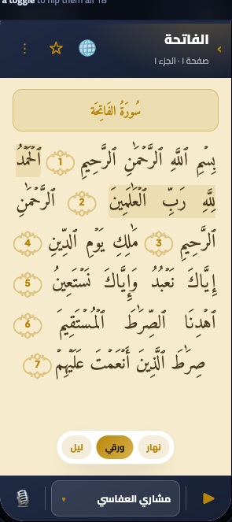
✓ Revived in the new UX
Reciter (Qari) PICKER: the mockup shows the reciter name 'Mishary Alafasy / مشاري العفاسي' only as a static label, dropping the actual dropdown spinner that lets the user choose a reciter and persists PREF_DEFAULT_QARI.
Stop button (ic_stop): real PLAYING/PAUSED row has a dedicated Stop; the mockup has no stop control.
Settings gear (ic_action_settings) and the entire slide-up audio-settings panel it opens: From/To sura+ayah range spinners, 'Play set of verses' range-repeat picker (1-25), 'Play each verse' per-verse-repeat picker (1-25), 'Only play the above verses' checkbox, and 'Apply' button — all absent from the mockup.
Repeat COUNT semantics: the mockup's plain 🔁 icon drops the numeric superscript cycle (1/2/3/∞) that the real RepeatButton shows.
DOWNLOADING / LOADING state (progress bar + status text + Cancel X) — the most common real state and the one actually captured in the as-built screenshot — is not represented.
PROMPT_DOWNLOAD (non-Wi-Fi) state with Accept/Cancel and the 'You are not on Wi-Fi. Download data anyway?' prompt is not represented.
✕ Removed (mockup had invented these)
Shuffle control (🔀) — the app has no shuffle.
Circular album-art disc with the ۩ glyph — reciters have no artwork; the bar shows no art.
Draggable seek thumb + elapsed/total time readouts (1:02 / 2:48) — no playback-position seeking or time display exists.
Collapse chevron (⌄) at top-left — there is no full-screen player to collapse.
Overflow (⋮) menu at top-right — the bar has no kebab menu; the real entry point is the settings gear opening the From/To range panel.
Search & jump
09 Search results
Feature-complete redesign
Current app
No device capture (Arabic can't be typed via adb); the new UX shows results + empty states.
→
New UX
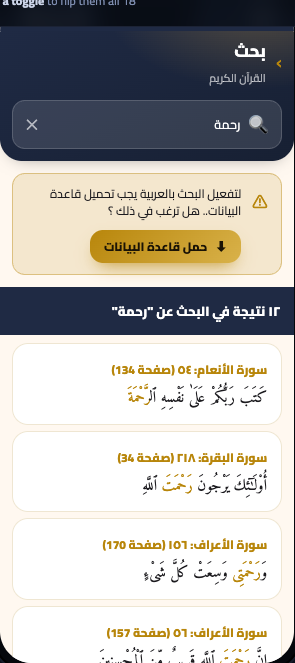
✓ Revived in the new UX
Hero title "Search"/"بحث" and subtitle "The Holy Quran"/"القرآن الكريم" — the mockup collapses everything into a single back+search row and shows no title/subtitle.
The entire themed empty / no-results state: gold lens-in-frame icon, "No results"/"لا توجد نتائج" title, the "Try a different word, or download a translation..." hint, and the conditional "Get Translations"/"حمّل التفسير أو الترجمة" button.
The gold inline match highlight in verse snippets (the mockup uses bold black <b> instead of the real gold-colored highlight).
The full real location string format "Found in Surah X: ayah (page N)" — the mockup abbreviates to "Al-An'am : 54 · Page 134".
The searched-query echo + trailing colon in the count band (real: "12 results for \"mercy\":" ; mockup shows only "12 results").
✕ Removed (mockup had invented these)
A 📍 location-pin icon on every result row — the real search_result.xml card has no leading icon.
A › chevron on every result row — the real card has no trailing chevron.
An inline "Download"/"تنزيل" text link for the Arabic warning — the real screen uses a gold download button (btnGetTranslations), not a text link.
10 Quick-jump dialog
Feature-complete redesign
Current app
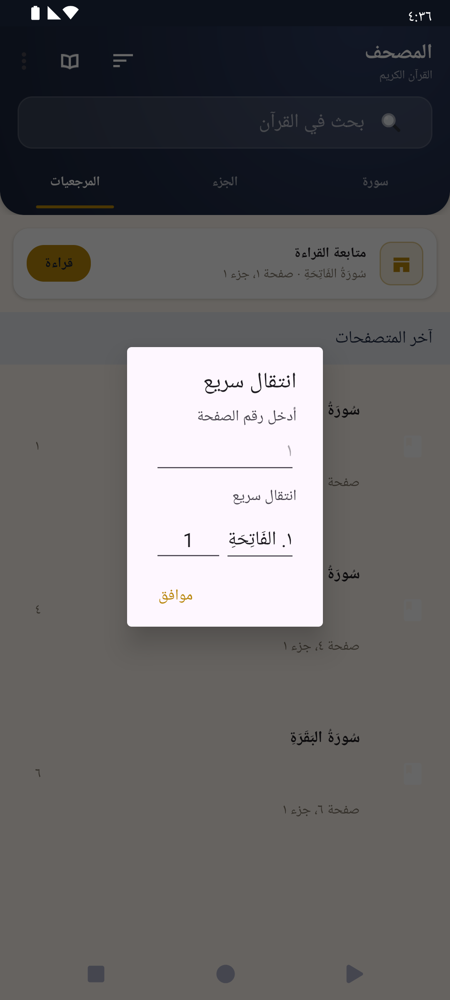
→
New UX
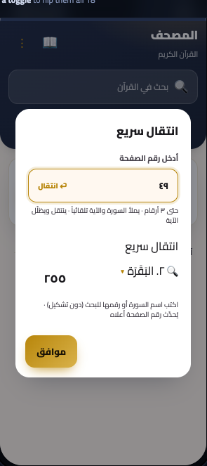
✓ Revived in the new UX
The second section label "انتقال سريع / Go to page" (string menu_jump) — the mockup replaced it with a "— or —" divider.
The Surah item NUMBER PREFIX format "{n}. {name}" (e.g. "١. الفَاتِحَةِ") — mockup shows just "البقرة" with no number.
The fact that the Surah field is a TYPEABLE searchable autocomplete (infix + number + diacritic-insensitive filtering) — mockup renders it as a static picker with only a ▾ caret.
The single shared-row layout of Surah + Ayah (one row, one shared label) — mockup splits them into two stacked full-width fields.
Bidirectional auto-fill linking (page→sura/ayah and sura/ayah→page-hint) — not represented.
Keyboard GO-action submit on the page field, and the auto-shown soft keyboard.
✕ Removed (mockup had invented these)
A "Cancel / إلغاء" button — the real dialog has no negative button at all (only one OK button).
The "— or —" divider between page and surah — does not exist in the app.
A static "1–604" placeholder in the page field — the real field has no fixed range hint; its hint is the dynamically computed page number.
A static "1–286" placeholder in the ayah field — no such placeholder exists in the app.
Separate "Surah / السورة" and "Ayah / الآية" field labels — the app has neither; both inputs share the single menu_jump section header.
Settings & managers
12 Settings — display
Feature-complete redesign
Current app
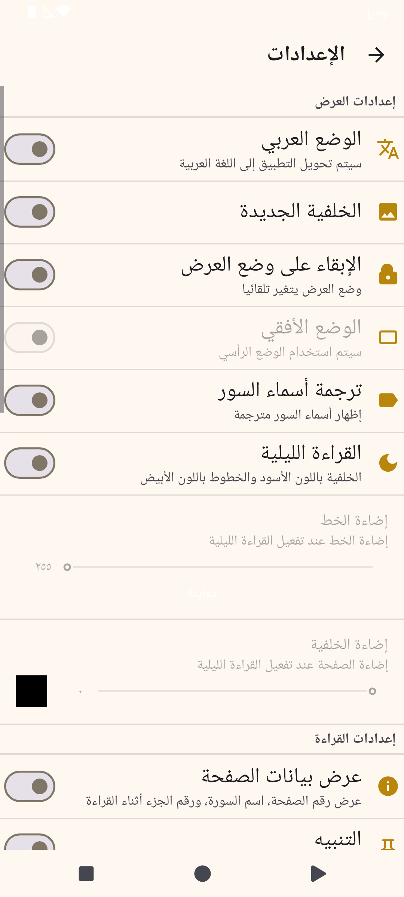
→
New UX
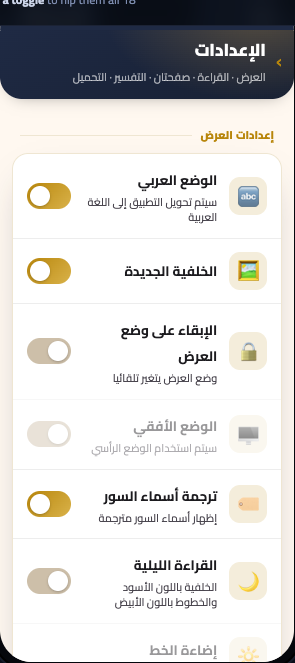
✓ Revived in the new UX
Night mode toggle (القراءة الليلية / 'Use dark background and light fonts') — completely absent.
Text brightness slider (إضاءة الخط) including its numeric value readout and the 'معاينة'/Preview action — absent.
Background brightness slider (إضاءة الخلفية) including its colour/black preview swatch — absent.
Surah translated name switch (ترجمة أسماء السور / 'Show the translation of surah name') — absent (the mockup's 'Arabic surah names' row is actually the mislabeled Arabic-mode pref, see misrepresents).
Landscape orientation switch (الوضع اﻷفقي) and its dependency-disabled state under Lock orientation — absent.
'Default reciter / Mishary Alafasy' (value row) — no such preference exists in quran_preferences.xml. There is no default-reciter setting; the nearest real items are Audio Manager, Streaming, and Download amount, all of which the mockup omits.
'About & help' navigation row inside the Audio & advanced card — there is NO 'About' item in QuranPreferenceActivity. An About screen (about.xml / AboutFragment) exists in the app but is reached from the home/Quran overflow menu, not from this Settings screen, and there is no 'help' entry at all.
'Reading background: Sepia' as a value/picker — invents a paper-tone chooser in Settings that does not exist (real pref is an on/off 'New background' switch).
'3 installed' translations count on the Translations row — invented dynamic count not present in the real summary.
'Audio & advanced' as a category name — invented grouping; the real screen has separate 'Download Options' and 'Advanced Options' categories and no combined audio/advanced section.
13 Settings — advanced
Feature-complete redesign
Current app
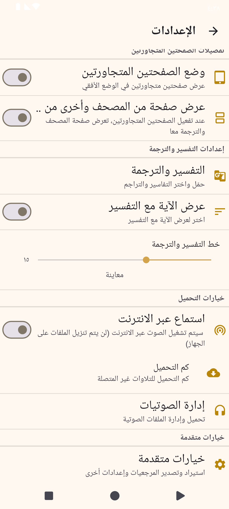
→
New UX
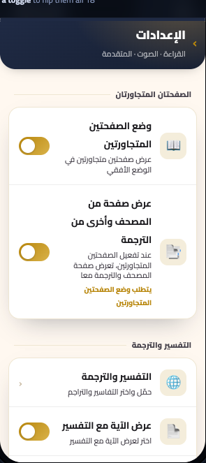
✓ Revived in the new UX
ENTIRE lower main-settings content that ab-settings-adv.png actually shows is absent from this mockup part — it was replaced wholesale by the Advanced sub-screen. Specifically dropped:
Dual Page Mode toggle ('وضع الصفحتين المتجاورتين') and its summaryOn/Off describing landscape side-by-side pages.
'Quran and translation in dual mode' toggle ('عرض صفحة من المصحف وأخرى من الترجمة'), including its dependency on Dual Page Mode.
'Ayah before translation' toggle ('عرض اﻵية مع التفسير').
'Translation text size' slider with the live 'Preview / معاينة' sample ('خط التفسير والترجمة').
✕ Removed (mockup had invented these)
'Reset all settings — Restore defaults, can't be undone' (red/danger row). No reset-to-defaults / clear-all preference exists anywhere in the app — fully invented.
'Quran data size — 248 MB' as a standalone row. There is no separate data-size preference; the data size only appears as a line inside the storage-location row's summary ('Current data size is N MB').
'Export reading progress / Khatmah & session history' as a CSV target — no such export exists; CSV export is bookmarks+tags.
A populated 'Diagnostics' section in the general (release) build — its only real member, Send logs, is stripped from release builds, and Reset all settings is invented, so this section has no guaranteed real content.
11 Bookmark/tag multi-select
Feature-complete redesign
Current app
No device capture (needs saved tags); the new UX shows the CAB + tag dialog.
→
New UX
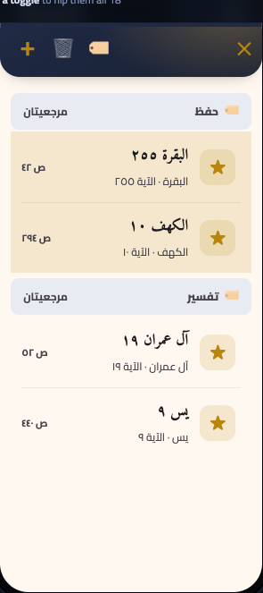
✓ Revived in the new UX
The 4th CAB action 'New Tag' (ic_new / 'New Tag' / 'صنف جديد') is missing — the mockup shows only three action icons (🏷️ ✎ 🗑️). New Tag is ALWAYS present in the real CAB.
The entire Tag Bookmark dialog that the 🏷️ action opens is not depicted in this part: a multi-select checklist of all tags (gold checkboxes), the bottom 'New Tag' (+) row, and OK/Cancel buttons. tag_row.xml was given as source for this screen but nothing in the mockup represents it.
The Undo affordance on delete: real delete is deferred and shows a Snackbar 'N deleted' + UNDO. The mockup has no snackbar/undo state.
The ability to select a whole TAG-GROUP HEADER (tagId>=0) — not just individual bookmarks — to rename (Edit Tag) or delete the tag. The mockup only shows bookmark rows being selected, so the header-selection capability (and the state where ✎ Edit Tag appears) is absent.
✕ Removed (mockup had invented these)
The CAB title '2 selected' / '2 محدد' — the bookmarks CAB code never calls setTitle/setSubtitle, so the real CAB shows no selected-count title. (A reasonable enhancement, but it is not in the current app.)
The specific tag chip labels (Memorize/Tafsir/Favorites/Daily / حفظ/تفسير/مفضلة/يومي) are illustrative sample data; there are no built-in preset tags by these names in the source.
15 Tafsir & Translation manager
Feature-complete redesign
Current app
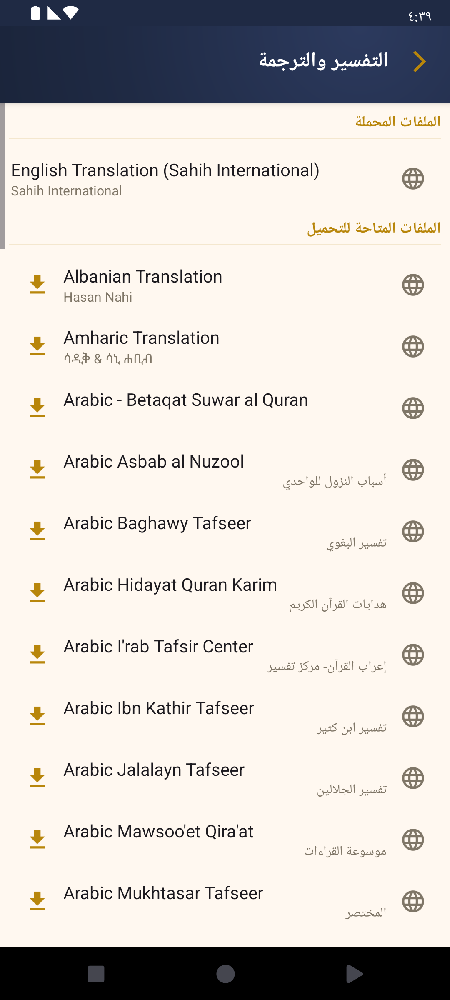
→
New UX
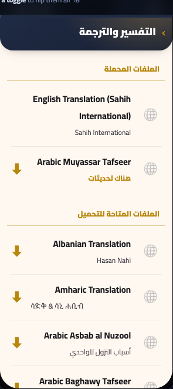
✓ Revived in the new UX
The leading globe icon (ic_translation) that appears on EVERY row in the real app — the mockup shows no leading icon on available rows and replaces it with a drag handle on downloaded rows.
The 'Update Available'/'هناك تحديثات' upgrade state (installed-but-outdated translation shown with a gold download icon + that subtitle, tap to upgrade).
Pull-to-refresh (SwipeRefreshLayout) to reload the server list, plus the loading spinner and the error Snackbar ('Unable to download the list of translations. Please try again later.').
The delete-confirmation bottom sheet (title 'Remove Translation?', message 'Are you sure you would like to remove the {name}?', Remove / cancel buttons).
The real secondary-line content: the translator/scholar name (e.g. 'Sahih International', 'Hasan Nahi', Arabic names like 'تفسير ابن كثير'). The mockup shows language descriptors instead.
✕ Removed (mockup had invented these)
A search lens icon (🔍) in the header — this screen has no search and no options/overflow menu (only the long-press contextual menu exists).
The header subtitle line '3 installed · tap & hold to reorder'.
An inline download progress bar with '64%' on a 'Pickthall · downloading…' row.
16 Reciters audio manager
Feature-complete redesign
Current app
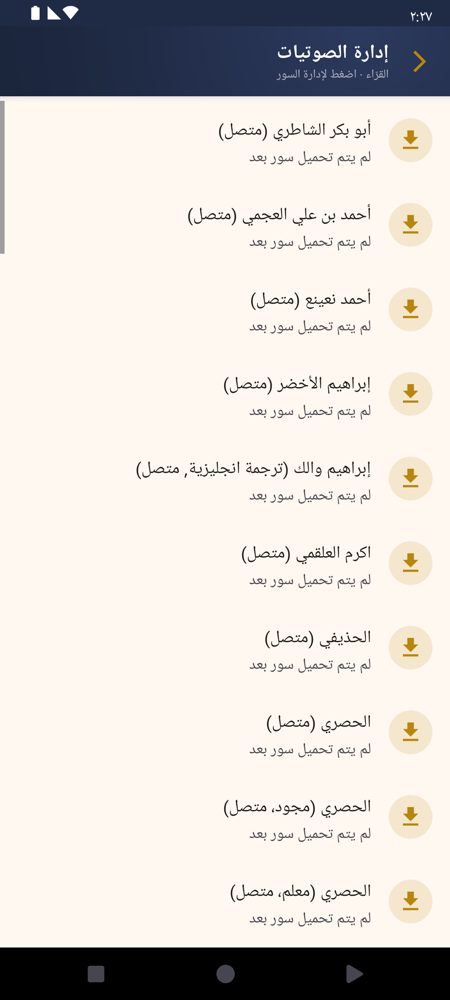
→
New UX
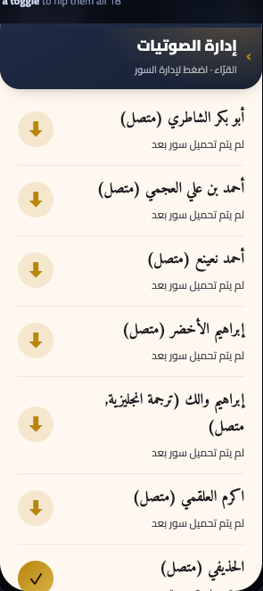
✓ Revived in the new UX
The ENTIRE per-reciter surahs screen (SheikhAudioManagerActivity / prop-05) is absent from the mockup — no surah list, no 'Download all' toolbar action, no per-surah download/delete, no count subtitle.
The bulk-download dialog (Download all → from-surah / to-surah autocomplete pickers + 'Download selection') is not depicted.
The multi-select contextual mode (long-press to select, 'Download selection' / 'Delete selection' contextual bar, gold-faint selected-row highlight) is not depicted.
The delete-confirmation bottom sheet ('Remove Surah? / حذف الملف الصوتي؟' with Remove/Cancel) is not depicted.
The list-row 'files_downloaded' plural copy is dropped — including the empty state 'No surahs downloaded yet / لم يتم تحميل سور بعد' that is actually the default state shown for every reciter in prop-04.
The partial-download leading-icon state is dropped: the real list shows a gold CHECK icon for any reciter with ≥1 surah downloaded (not only 114/114); the mockup only shows a chip for fully-downloaded.
✕ Removed (mockup had invented these)
A search icon (🔍) in the header — the reciter list has no Toolbar menu and no SearchView; there is no search on this screen.
A 🎙️ microphone avatar per reciter — the app has no reciter avatar; that slot is the functional download/check button.
A 'Downloaded / مُثبّت' status chip — the app has no such chip; downloaded state is conveyed by the check icon + the 'X surahs downloaded' count.
An inline per-reciter download progress bar with a percentage (e.g. '72% / ٧٢٪') on the list rows — the list rows show no progress bar or percentage; download progress is handled on the per-reciter screen via the download service/notification.
A per-reciter ⬇ download arrow on the list rows implying a one-tap 'download this whole reciter' action from the list — no such control exists on the list screen.
About
14 About screen
Feature-complete redesign
Current app
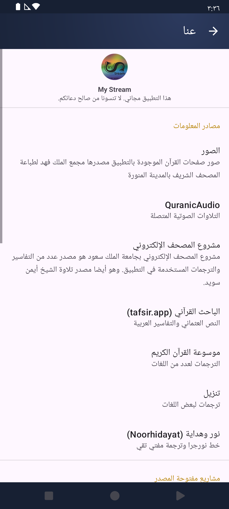
→
New UX
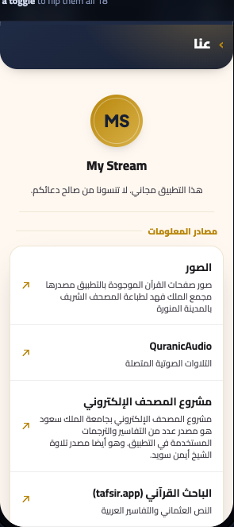
✓ Revived in the new UX
QuranicAudio data-source row and its https://quranicaudio.com link.
Electronic Moshaf Project / 'مشروع المصحف الإلكتروني' (KSU) row and its https://quran.ksu.edu.sa link plus its descriptive summary.
Al-Bāḥith al-Qur'ānī (tafsir.app) row and its https://tafsir.app link.
Noble Quran Encyclopedia (QuranEnc) / 'موسوعة القرآن الكريم' row and https://quranenc.com link.
Tanzil / 'تنزيل' row and http://tanzil.net link.
Noorhidayat / 'نور وهداية' row and http://www.noorehidayat.org link.
✕ Removed (mockup had invented these)
'v4.2.1' version number — no version string appears anywhere on the real About screen.
The 'About' descriptive paragraph ('A calm navy-and-gold Qur'an reader…') — invented copy not present in the app.
'Warsh' as a Quran text source — there is no Warsh image string/source in the app (only madani/naskh/qaloon variants exist).
The entire 'Support' / 'الدعم' section with 'Help & FAQ' / 'المساعدة والأسئلة', 'Contact us' / 'تواصل معنا', and 'Rate the app' / 'قيّم التطبيق' — none of these exist in about.xml or AboutFragment; this screen has no help, contact, or rate actions.
The book emoji (📖) header icon — the real header uses the app's actual logo drawable.
First-run data gate
17 Data download & permissions
Feature-complete redesign
Current app
No device capture (only shows before page data is installed); the new UX shows the full prompt→download→process→error flow.
→
New UX
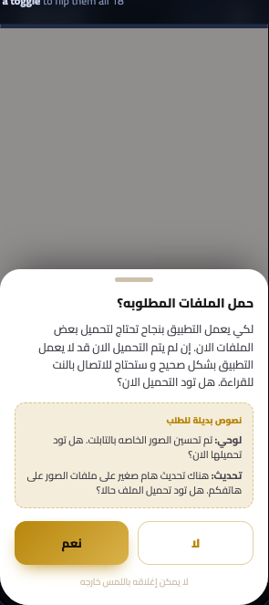
✓ Revived in the new UX
The actual download-prompt step: a non-cancelable Yes/No bottom-sheet titled 'Download Required Files?' (downloadPrompt_title) with Yes (downloadPrompt_ok) / No (downloadPrompt_no). The mockup has no Yes/No prompt at all.
Storage-permission rationale bottom-sheet (storage_permission_rationale, OK/Cancel) + the system permission request + the 'Please restart the app…' toast.
Migration 'Please wait…' indeterminate gold-spinner dialog (migration_upgrade.xml) used on Android 11+ while moving files.
The Processing/Extracting phase ('Processing…' = extracting_title, 'Processing file N / M' = process_progress) — half of the real progress flow.
The indeterminate progress state (progress == -1).
The non-fatal auto-retry message 'Corrupted file, attempting to re-download' (download_error_invalid_download_retry, STATE_ERROR_WILL_RETRY).
✕ Removed (mockup had invented these)
The entire full-screen download page (navy gradient background, 📖 glyph, headline 'Download Quran pages').
'Madani Mushaf · about 45 MB' pre-download size label — no size estimate is shown before download; size only appears live during download as MB/MB.
'Use streaming instead' button — page/image streaming is not an option on this gate. 'Streaming' exists only as a separate AUDIO preference (prefs_streaming_title 'Streaming' / prefs_streaming_summary 'Stream audio instead of downloading'). Declining here is simply 'No'.
The 'page 374 of 604' page counter.
A persistent gold 'Download' CTA coexisting with a progress card.